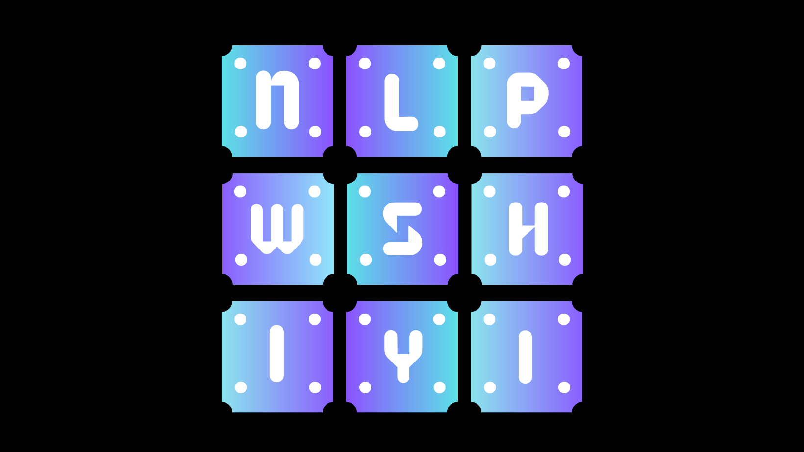

Hi, I’m Shiyi. Welcome to my technical blog. Please check out this page for a more detailed account of my journey with respect to learning Natural Language Processing. Here I will only be documenting the gists. I will be presenting everything I have learned so far, including important concepts, necessary code snippets, and more. I am by no means an expert in this subject, but I have gone through extensive studies and training in the fields and subfields related to have a good grasp of what’s important.
Areas that I have dabbled in,
→ General Linguistics
→ Symbolic Computational Linguistics
→ Statistical Natural Language Processing
→ State of the Art Large Language Modeling
What do we mean by Natural Language Processing? If we do a little googling and researching, it's very intuitive that natural language processing involves a set of solutions to various natural human language tasks. The most common ones are
→ Sentiment analysis
→ Machine translation
→ Word-sense disambiguation
→ Named-entity recognition
→ Topic modeling
→ Text classification
→ Document Classification
→ Question answering
The history of Computational Linguistics dates back to the 40s to 50s. So, it's not very long ago that the field that has created ChatGPT or any form of AI that is so commonly adopted in every aspect of our lives now started to have its very first ancestral ideation. It's still a fairly new and young field with infinite possibilities up for exploration.
Before diving in, first we have to ask ourselves what exactly is artificial intelligence (AI)?
According to the official definition extracted out of John McCarthy's 2004 paper listed on IBM's website,
🤖️ "It is the science and engineering of making intelligent machines,
especially intelligent computer programs. It is related to the similar
task of using computers to understand human intelligence, but AI does
not have to confine itself to methods that are biologically observable."
So if it's to understand human intelligence, we need to know humans gain information and how human intelligence, or the brain, really works both through physiology and psychology,
💡 Two Important Sources of Knowledge: Rationalism and Empiricism.
The first acquires knowledge through reasoning and logic, while the
second through experience and experimentation.
Below are some important notes with respect to the historical timeline of the development of Computational Linguistics and NLP and how it all started from one of these two principles and gradually transitioned to the other (rationalism / computationalism to empiricism / connectionism; although computationalism is not always symbolic; namely it also incorporates empirical evidence):
Noisy Channel Model
For the transmission of language through media like communication channels and speech acoustics, Shannon used the metaphors of the noisy channel and decoding.
Shannon produced the first measurement of the entropy of English using probabilistic approaches, employing entropy from thermodynamics to quantify the information content of a language or the information capacity of a channel.
Instrumental phonetics and the development of the sound spectrograph established the foundation for later work in voice recognition (Koenig et al., 1946). The first automated speech recognition systems were created in the early 1950s.
Foundational Insights: 1940s - 1950s
Using Shannon's work as inspiration, Chomsky (1956-7) originally studied finite-state machines as a way to characterize a grammar before defining a finite-state language as a language produced by a finite-state grammar.
These pioneering theories paved the way for formal language theory, which defines formal languages as sequences of symbols using algebra and set theory. Meanwhile, in the realm of theoretical linguistics, Chomsky (1957) postulated transformational and context free grammar which helped establish paradigms for describing natural language syntax.
The work of Turing, the founding father of computer science, first resulted in the development of a computing component that was more close to propositional logic. After that, regular expressions and finite state automata were created by Stephen Kleene, inspired by the work of Emil Post in 1951 and 1956.
Then, probabilistic models, such as Markov processes, have indeed played a significant role in automating and formalizing natural language processing. They provide a probabilistic framework for understanding language structure and have been widely used in various language processing tasks.
The Merging of Two Cultures
Language Theory: The work of Chomsky and others on formal language theory and generative syntax throughout the late 1950s and early to mid 1960s, and work of many linguists and computational scientists on parsing algorithms, initially top-down and bottom-up and via dynamic programming.
The Transformations and Discourse Analysis Project (TDAP), developed by Zelig Harris and deployed at the University of Pennsylvania between 1958 and 1959, was one of the first full parsing systems (Harris, 1962).
Artificial Intelligence: In the summer of 1956, researchers were called together for a two-month workshop on what John McCarthy, Marvin Minsky, Cloude Shannon, and Nathaniel Rochester came to refer to as artificial intelligence (AI).
These were simple systems that worked in single domains mainly by a combinations of pattern matching and keyboard search with simple heuristics for reasoning and question-answering. By the late 60s more formal logical systems were developed.
Paradigms Develop
The Bayesian approach was starting to be used to tackle the optical character recognition issues.
By multiplying the likelihoods for each letter, Bledsoe and Browning (1959) created a Bayesian text-recognition system that made use of a large dictionary to compute the likelihood of each observed letter sequence given each word in the dictionary. Bayesian techniques were used by Mosteller and Wallace (1964) to address the issue of authorship attribution on the Federalist papers.
The first online corpus was created in 1963–1964 at Brown University and contains 1 million words of samples from 500 different written texts in a variety of genres (newspapers, novels, non-fiction, academic texts, etc.).
Independently, employees at IBM and Baker at Carnegie Mellon University developed speech recognition algorithms, using techniques like the Hidden Markov Model and analogies to a noisy channel and decoding.
Empiricism Redux
After work on finite-state phonology and morphology by Kaplan and Kay (1981) and finite-state models of syntax by Church (1980), finite-state models started to garner attention once more.
Empiricism is making a comeback, most notably with the rise of probabilistic models used in speech and language processing, which has been greatly influenced by research at the IBM Thomas J. Watson Research Center on speech recognition probabilistic models.
These probabilistic techniques are additional examples of data-driven strategies used in part-of-speech tagging, attachment ambiguities, parsing, and connectionist strategies ranging from speech recognition to semantics. These were the original approaches used before the sophisticated neural language models that are used today.